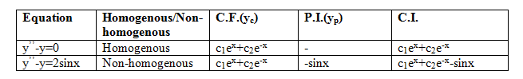

Application to Ordinary Linear Differential Equations and Engineering Problems
Ordinary linear differential equations with constant coefficients are extensively used in solving engineering problems. This experiment helps in building a clear understanding of the mathematical concepts used in the standard method for finding solutions of these equations.
1. Notation:
(i.) E: collection of differentiable function
(ii.) F: function from R to R
(iii.) D: d/dx
(iv.) D2: d/dx(d/dx), i.e. d2/dx2
This experiment is not focused on learning the standard method of solution.
2. Second order linear differential equation:
The equation
y’’+Py’+Qy=f(x) …(i)
is a second order linear differential equation with constant coefficients, where P, Q∈R and f:R→R is a continuous function. If f(x)=0, then such equation is called a homogeneous second order linear differential equation with constant coefficients.
It is well known that linear ordinary differential equations with constant coefficients are used in solving engineering problems.
3. Standard method of solution:
In this section, we present the standard method to obtain the solution of equation (i).
Consider the equation am2+bm+c=0, which is called the auxiliary equation. Then y(x) = c1em1x+c2em2x, where c1, c2 are constants and m1, m2 are the roots of the auxiliary equation is known as complementary function (C.F.) and is denoted by yc.
A specific function g(x) which satisfies equation (i) is called particular integral (P.I.) and is denoted by yp. Any solution of equation (i) is of the form y(x)≡yc+yp=c1em1x+c2em2x+g(x). This is called the complete integral (C.I.).
In particular, if f(x)=0, then complementary function gives all solutions of equation (i), so that C.I.=C.F, that is its solution is given by y(x) = c1em1x+c2em2x, where c1, c2 are constants and m1, m2 are the roots of the auxiliary equation am2+bm+c=0
Note. There are typical approaches for calculating particular integral, but here we will consider hit and trial approach only.
4. Examples and explanation matrix:
4.1. Examples:
(i.) Let y’’-y=0 be a homogeneous second order linear differential equation. Then y’’=D2(y), which implies that (D2-I)y=0. Clearly auxiliary equation is m2-1=0, thus m=1, -1. Then the complementary function and hence the complete integral of this equation is c1ex+c2e-x, where c1, c2 are constants.
(ii.) Let y’’-y=2sinx be the second order linear differential equation. Let y’’=D2(y). Then (D2-1)y=2sinx, y=-sinx satisfies this equation. It can be seen that -sinx is a particular integral of this equation. Thus complete integral is C1ex+C2e-x -sinx, where c1, c2 are constants.
4.2 Summary:
Examples given in Section 4.1 are summarized in explanation matrix given below. 
5. Understanding:
5.1. Collection of differentiable functions as a vector space:
Collection of differentiable functions E from R to R is a vector space over R with addition and scalar multiplication of functions.
5.2. Derivative as an operator:
Notion of derivative is well known. It operates on functions. Thus d/dx is a function from the collection of differentiable functions to collection of functions. It is denoted by D and is called differential operator.
5.3. Operator defined by differential equation:
Let y’’+py’+qy=f(x), where p, q∈R be a given linear differential equation of second order. Then (D2+pD+qI)(y)=r, where D2(y)= y’’, D(y)=y’ and I is the identity operator. Thus the L.H.S. of the given equation provides the operator D2+pD+qI which is called the operator defined by the given differential equation.
5.4. Linear map equation defined by a given differential equation:
Let y’’+py’+qy=f(x), where p, q∈R be a given linear differential equation of second order. Then this can be written as T(y)=r, where T:F→F is the operator as defined in Section 5.3 so that T=D2+pD+qI. This is the desired linear map equation T(y)=r given by the differential equation.
5.5. Solution of differential equation:
Recall that solution set of a linear map T(y)=r, as described in Section 5.4, is yo+kerT, where yo is its particular solution and kerT is the collection of all solutions of T(y)=0. Notice that linear map equation is just another form of the given differential equation. Therefore its solutions are also the solution of given differential equation.
As given in Section 3, a solution of linear differential equation is given by yc+yp, where yc is a solution of the homogenous counterpart of the given differential equation and yc is a particular solution of the given differential equation. Here it may be noted that yp corresponds to yo and yc corresponds to an element of kerT.
5.6. Example:
Let y’’-5y’+6y=2ex be the given differential equation.
Standard method for solution:
(a) The auxiliary equation is m2-5m+6=0, i.e. (m-2)(m-3)=0. Thus m=2, 3. Then the complementary function of the given differential equation is c1e3x+c2e2x, wherec1, c2 are constants.
(b) Clearly y=ex satisfies the given differential equation. Thus ex is a particular integral.
(c) Thus complete integral y(x)=c1e3x+c2e2x+ex, where c1, c2 are constants.
Verification:
Substituting the value of y(x) obtained above, in the given differential equation, it comes out to be equal to 2ex which is the R.H.S. of the given differential equation.
Understanding of complete integral:
This provides an illustration of the understanding provided in Section 5, i.e understanding as to why the standard method as given in Section 3 provides all solutions of the given differential equation.
The linear map arising out of the given differential equation is T≡D2-5D+6I and the linear map equation is T(y)=2ex. The solution set of linear map equation is the solution set of the given differential equation.
6. Example (Engineering problem):
In an RLC circuit, at t=0, a current of 2 ampere flows with resistance R=40 ohm, inductance L=2/5 henry, and capacitance C=10−2 farad. The current I≡dQ/dt is to be determined, where Q is the charge flowing in the circuit at t>0 if Q(0)=1, Q′(0)=2. It is assumed here that voltage E(t)=0, for t>0.
The given problem is mathematically represented by an initial value problem: the differential equation for the charge Q across the circuit using Kirchhoff’s law is 2/5Q′′+40Q′+100Q=E(t) and the initial condition are Q(0)=1, Q′(0)=2. To find its solution and the required current, we proceed as follows.
The given differential equation reduces to 2Q′′+200Q′+500Q=0. The auxiliary equation of the given differential equation is 2m2+200m+500=0. Thus m=(−50+15 t) or (−50-15 t). Therefore the complete integral of the given differential equation is
Q=c1e +c2e … (i)
where c1, c2 are constants. Now differentiating equation (i) yields
Q′=(−50+15 t)c1e +(−50-15 t)c2e , … (ii)
Using given initial conditions, we obtain c1+c2=Q(0)=1 and (−50+15 t)c1+(−50-15 t)c2=Q′(0)=2. Therefore c2=0.285 and c1=0.715. Thus Q=0.715e +0.285e. Required current I≡dQ/dt=(−50+15 t).(0.715)e +(−50-15t).(0.285) e